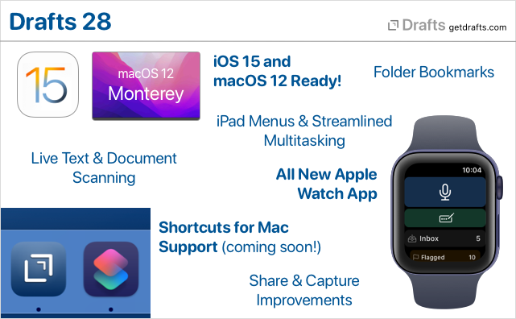

Drafts 28.0 has been released:
Details below. For a complete history of updates, visit:
What’s New
Ready for iOS 15 and macOS 12

Drafts is ready for iOS 15 and macOS 12! Updated for compatibility, of course, but also to take advantage of some of the great new features. New details below, but Drafts works great with “Live Text” to capture text from images, has full support for Shortcuts on the Mac, and brings great new iPad features, like powerful external keyboard menus.
New Apple Watch App

We have re-written the Drafts Apple Watch app from the ground up to use the latest watchOS technologies. It’s still the best, easiest way to capture ideas on the go, but has a few new tricks:
- Multiple complication types to capture, capture with options, or see your inbox or flagged draft count.
- Inbox drafts synced to watch now reflect your default workspace options on the phone.
- Flagged drafts now also synced to the watch.
- Requires watchOS 7.1 or greater.
Learn More About Drafts on Apple Watch →
Shortcuts Support on macOS 12
We’re ready for Shortcuts on the Mac! It’s just not quite ready for us. Look for full, cross-platform support for all of Drafts’ Shortcuts actions when macOS 12 (Monterey) is released in the coming weeks!
We’re ready for Shortcuts on the Mac! It’s just not quite ready for us. Look for full, cross-platform support for all of Drafts’ Shortcuts actions when macOS 12 (Monterey) is released in the coming weeks!
In the meantime, enjoy these new shortcut actions on iOS:
- Get Current Draft: Retrieves the draft object for the draft currently open in the editor.
-
Open Draft Enhancements: The “Open Draft” shortcut action now has a bunch of additional optional parameters to configure Drafts while opening - to load a workspace, actions groups, hide/show the drafts and action lists, etc. Great for bookmarking a specific set of options in a Shortcut.
Learn More About Shortcuts →
Folder Bookmarks
Up to now, Drafts file actions and scripts have been limited to working with files in the “Drafts” folder in iCloud Drive (or by working directly with cloud-provider APIs, like Dropbox and Google Drive). With folder bookmarks, it is now possible to grant permissions to additional folders outside the Drafts App Sandbox, making it easier to integrate with other apps and services, to, say, export a draft content to another system - like an Obsidian Vault, etc.
Document Scanning and Live Text Support
Drafts has been tested and works great with the new “Live Text” features in iOS 15 and macOS 12. In addition, we have incorporated document scanning to OCR directly in the iOS app. Tap and hold the “+” and select “Scan Document” to open the document scanning camera. It supports scanning multi-page documents, and directly runs the results through OCR to create a new draft with the result text.
Learn More About Live Text & Scanning →
Share Extension and Capture Window Updates
Drafts capture flow used in the iOS Share extension and the “Capture” window on Mac, has received a number of updates:
- Both now remember your recently used selections for appending and prepending to existing drafts, to make it easier to re-use active drafts.
- The Mac Share extension now displays in a new capture window, allow preview/editing of captured text as well as appending-prepending to other drafts - more like the iOS Share extension.
- Mac Services menu now contains “Capture to Drafts” and “Capture to Drafts with Options” services to send text selections to Drafts from anywhere in the system. The “with Options” version displays a capture window, while the other version capture silently as a new draft.
- New
/captureURL scheme, and Shortcut “Show Capture” action, allow you display the capture window in app, optionally pre-filled with text and tags. This is useful in capture workflows from other apps, as well as web bookmarklets.
Learn more about the iOS Share Extension and Mac Capture Window
General Improvements
- New tag suggestion interface on iOS to make it easier to tag your drafts with just the right tags.
- On iOS, long press on links to other drafts now generates a preview and several command options for the draft. This includes
[[wiki-style]]links, ordrafts://openlinks in link mode. - On Mac,
command-clickon links to other drafts to open them in a new window. - Tags in the tag filter pane now have contextual menu (tap and hold) with “rename” and “delete” commands to bulk manage tags. These options already existed in the draft list “Operations” commands, but these versions pre-fill the tag value for better accuracy.
Other Updates and Fixes
All Platforms
- New “What’s New” screen accessible via Settings > What’s New (iOS) or Help > What’s New (macOS)
- “Run Shortcut” action step has new “Return to Drafts” option. If disabled, Drafts will not include callback parameters to return to Drafts after completing the Shortcut. If you do not care about a result from Shortcuts, and wish to end up in a different app when the shortcut finishes, disable this option.
-
[[hashtags]]template tag. Returns assigned tags as comma-separated list, with each tag prefixed with a “#”. Convenience tag to remove the need to script this conversion when exporting to systems that use hash tags. - Estimated read time now calculated and displayed in draft detail
(i)screen. - Fix: Markdown syntaxes not recognizing [ref][links] with space.
- Fix: After success “Trash” would not load next draft properly in focus mode.
iOS
- Refactor the next-previous button logic because it was not updating properly in some cases.
- A few new app icon options.
- Require iOS 14.1 or greater.
- Remove pre-iOS 14 “Today” widgets.
Mac
- More toolbar options to customize your toolbar. Focus, link modes, preview, arrange buttons now available.
- List types returned from AppleScript not converted properly to JavaScript arrays.
Scripting, Shortcuts, and URL Schemes
-
version.delete()function to allow scripted deletion of versions in the version history. (docs) -
ActionLogscript object used to read and manipulation entries in the Action Log. Generally accessed from thedraft.actionLogsproperty. (docs) -
/scandocumentURL scheme. (docs) -
editor.scanDocument() -> stringfunction. Also similar toeditor.dictate()function, opens the document scanner and returns any OCR results as a string which you can do with as you please. (docs) - New “Get Current Draft” shortcut action retreives the draft currently open in the main editor.
- “Open Draft” shortcut action has additional options to configure state of window (show/hide side panes, load workspace, etc. - docs)
-
/openand/createURL schemes now support several additional parameters to configure the environment (docs):-
showDraftList[true/false] -
showActionList[true/false] -
loadWorkspace,loadActionGroup,loadActionBarGroup: take names of valid group/workspaces and applies them
-


{kind=link}